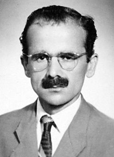

Zübeyir Gündüzalp (1920-1971)

29 yýl evvel Hakk'ýn rahmetine kavuþtu. Vazifesini tamamlayýp mübarek emaneti Rahmana teslim etti. "Ýman insaný insan eder belki insaný sultan eder. Hakiki imaný elde eden kainata meydan okuyabilir" vecizesine masadak oldu.Ruhunda hissettiði büyük boþluðu, Kur'an-ý Azimüþþan'ýn mükemmel tefsiri olan Risale-i Nurla doldurdu. O, artýk hakiki imaný elde etmiþ ve kainata meydan okuyordu. Gizli din düþmanlarýnýn en faal ve en etkili olduklarý, güvenlik görevlilerini, mahkemeleri yanýlttýklarý, dine hizmet etmekten baþka hiçbir gayeleri olmayan insanlarýn tahammül sýnýrlarýný aþan baskýlara maruz kaldýklarý bir dönemde hizmet etti. Afyon Aðýr Ceza Hakiminin;
-Risale-i Nur'un talebesi imiþsin? Sözlerine karþýlýk;
-Evet, Risale-i Nur talebesi olduðumu memnuniyetle ve ilan edercesine söyleyebilirim. Ýnkar etmek, Risale-i Nur'un bana verdiði fazilet dersleriyle zýt olduðu için, bu cürmü iþlemem. Risale-i Nur okuyucusu olan bir kimse okuduðunu gizleyemez; bilakis, iftiharla bilaperva söylemekten çekinmez... diyerek karþýlýk verecektir.
Kafkas asýllý, Konya'nýn Ermenek ilçesine yerleþmiþ bir ailenin çocuðu olarak dünyaya geldi (1920). Asýl adý Ziver olup Üstad, Zübeyir bin Avvam Hazretlerine atfen ismini Zübeyir olarak deðiþtirmiþ ve bu isimle tanýnmýþtýr. Ýlköðretimini Ermenek'te yaptýktan sonra ortaokulu Silifke'de okuyup bitirdi (1939). Bu tarihten itibaren önce Ermenek'te sonra Konya'da Posta telgraf muhabere memuru olarak çalýþtý. Konya'da bulunduðu sýralarda Nurlarla tanýþtý ve ömrünün sonuna kadar iman hizmetini en güzel þekilde ifa etti.
Emirdað'da Üstad'ý ziyaret edip (1946) yanýnda kalmak istediðini bildirdi ancak, memuriyetine devam etmesi, daha sonra yanýna alýnacaðý cevabýný aldý. 1948'de Afyon'da tutuklanarak Bediüzzaman'la birlikte altý ay hapis yattý. Bu tarihten itibaren Üstadýn vefatýna kadar hep yanýnda kaldý.
Üstad'la hapis yatarken yanlýþlýkla serbest býrakýldýðýnda bu fýrsattan yararlanýp özgürlüðüne kavuþma þansýna sahipti ancak, o, yapýlan yanlýþlýða itiraz ederek tahliyeyi engelledi, ve böylece Üstadýndan ayrýlmadý. Nurcularýn takibata uðradýðý, kanunsuz bir þekilde tutuklandýklarý, eziyet gördükleri hengamda, Risale-i Nurlarý okuduðunu söyleyerek kendi kendini ihbar etti. Her halükarda iman hakikatlerini mahkumlara, savcýlara, hakimlere izah ediyordu. Çünkü, O'nun tespitlerine göre Risale-i Nurlarý okuyan hakimler, yanlýþ hüküm vermezlerdi. Nitekim Risale-i Nurlar ve Nurcular hakkýnda açýlan yüzlerce dava, beraatla neticelendi.
Zübeyir Gündüzalp, Nurlarýn "Kara Sevdalý"sýdýr. Ýnsanlarýn imanýný kurtarmaya vesile olmak için gecesini gündüzüne katmýþtýr. Ýman aþkýyla yanýp tutuþurken Hakime:
"Eðer komünistler mürekkep ve kaðýdý yok etmek imkanýný da bulsalar, benim gibi birçok gençler ve büyükler fedai olup hakikat hazinesi olan Risale-i Nurun neþri için, mümkün olsa derimizi kaðýt, kanýmýzý mürekkep yapacaðýz" der.
O'nun için Risale-i Nura, Bediüzzaman'a talebe olmak, en büyük bir þereftir. Oysa, bu yüzden tutuklanýp yargýlanmaktadýr. Suç olarak görülen bu fiili kendisinden sorulduðunda:
"Bediüzzaman Said Nursi gibi bir dahinin þakirdi olmak liyakatini kendimde göremiyorum. Eðer kabul buyururlarsa, iftiharla, 'Evet, Risale-i Nurun þakirdiyim..." diye haykýrýrken, orada hazýr bulunan Üstad da "kabul ediyorum" diyecektir.
Bediüzzaman Hazretleri de O'nunla özel olarak ilgilenmiþtir. Pakistan'ýn önemli simalarýndan olan Ali Ekber Þah'ýn, Emirdað'dan uðurlandýðý sýrada yanlarýna gelen Zübeyir Gündüzalp için Üstad:
"Biz bir veziri uðurlamaya geldik, baþka genç bir veziri de karþýlamaya gelmiþiz." ve bilahare:
"Hayýr hayýr, ben Zübeyir'i karþýlamaya geldim" demiþtir.
Zübeyir Gündüzalp'ýn hizmetteki yerini Bediüzzaman Hazretlerinin:
"Zübeyir bana merhum biraderzadem Abdurrahman yerine verilmiþtir diye manevi ihtar aldým. Hakiki fedakar Zübeyir, en lüzumlu ve hizmete þiddetli ihtiyacým zamanýnda buraya imdada geldi..." ifadelerinde görmekteyiz.
27 Mayýs 1960 Ýhtilalinden sonra memleketi olan Ermenek'te mecburi ikamete tabi tutuldu. Burada bir süre kaldýktan sonra, gizlice Ermenek'ten ayrýlarak Ankara'ya gitti. Altý ay kadar Ankara'da kaldý ve 1961'de Ýstanbul'a geldi. 2 Nisan 1971 tarihinde Ýstanbul'da vefat etti.
Üstad Hazretlerinin ahirete irtihalinden sonra Meþveret sistemini tesis etti. Hizmeti meslek ve meþrep açýsýndan þekillendirdi. Risale-i Nur Külliyatýnýn neþri, Ýttihat Mecmuasý, Yeni Asya Gazetesi ve Yayýnevinin kurulmasý gibi yayýn faaliyetlerini baþlattý.